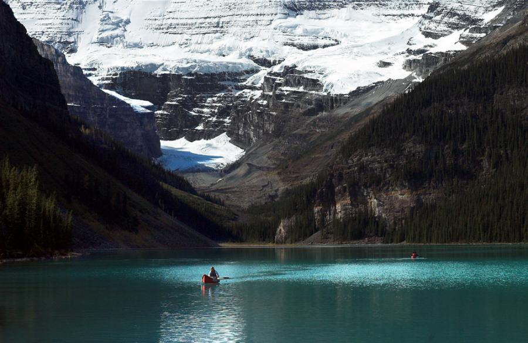

NATURE

Nature
in the broadest sense, is the physical world or universe. "Nature" can refer to the phenomena of the physical world, and also to life in general. The study of nature is a large, if not the only, part of science. Although humans are part of nature, human activity is often understood as a separate category from other natural phenomena.

meier, Switzerland, Landscape, Nature, Beauty, Amazing, Mountain, Sky HD Wallpaper posted in Landscape & Nature Wallpapers category and wallpaper original resolution is 2000x1333 px.. meier, Switzerland, Landscape, Nature, Beauty, Amazing, Mountain, Sky HD Desktop Background was Posted on 2019-09-10. You can download free the meier, Switzerland, Landscape, Nature, Beauty, Amazing, Mountain, Sky wallpaper hd deskop background which you see above with high resolution freely. Also if you can download a resized wallpaper to fit to your display or download original image Download hd wallpapers of 960397-meier, Switzerland, Landscape, Nature, Beauty, Amazing, Mountain, Sky. Free download High Quality and Widescreen Resolutions Desktop Background Image

tarsier
Just recently, Mayor Tamayo issued an order to Linan officials and tourism council to suspend accepting visitors while the research of Endangered Species International (ESi) is being conducted. ESI, an international wildlife conservation group, will start its study of the primates after the Department of Environment and Natural Resources (DENR) granted it “wildlife gratuitous permit.” The permit that DENR Region XII Director Alfredo S. Pascual issued early this year ESI to collect and study the tarsiers in Mt. Matutum Protected Landscape (MMPL) for 1 year. ESI will assess the tarsier's distribution, population size and density, habitat association, and status, which are needed for the establishment of a core conservation center for the protection of the animals’ habitat and prevention from possible extinction. ESI President Dr. Pierre Fidenci, during his visit here last month, sought the help of Tupi Mayor Reynaldo S. Tamayo, Jr. to free the area from further disturbance in preparation for the research. “We need to secure the area to ensure that the habitat will not be disturbed,” Fidenci told Mayor Tamayo. “I was alarmed with the reports that the locals are hunting the tarsiers and held it in captivity as showcase to visiting tourists,” he added. “We need to secure and free the area from disturbance or we might end up no tarsiers to study because tarsiers are sensitive and might flee out of their habitat if disturbed and worst it may commit suicide,” he further explained. Fidence also pointed out that the study is needed to come up with a sustainable eco-tourism plan for Linan. In response to the Mayor’s order, Linan chairman, Reynaldo Alburo said, “ We will obey with the Mayor’s order. This is good for the conservation and for our eco-tourism program.” (DED/CDIO-Tupi)

NATURE
Natural life refers to a person's physical lifetime or life span. It is the state of being which begins with generation, birth, or germination and ends with death. Life existing in the observable world is natural life.
 NATURE
NATURE
sunflower, (genus Helianthus), genus of nearly 70 species of herbaceous plants of the aster family (Asteraceae). Sunflowers are native primarily to North and South America, and some species are cultivated as ornamentals for their spectacular size and flower heads and for their edible seeds. The Jerusalem artichoke (Helianthus tuberosus) is cultivated for its edible underground tubers sunflower sunflower The common sunflower (H. annuus) is an annual herb with a rough hairy stem 1–4.5 metres (3–15 feet) high and broad, coarsely toothed, rough leaves 7.5–30 cm (3–12 inches) long arranged in spirals. The attractive heads of flowers are 7.5–15 cm wide in wild specimens and often 30 cm or more in cultivated types. The disk flowers are brown, yellow, or purple, while the petallike ray flowers are yellow. The fruit is a single-seeded achene. Oilseed varieties typically have small black achenes, while those grown for direct seed consumption, known as confection varieties, have larger black-and-white achenes that readily separate from the seed within.
NATURE
The exotic, both for human culture and for nature, encompasses everything that comes from a strange place. Keep in mind that the rarity depends on the person considering the issue. For example: a kimono can be an exotic dress in Brazil, but something very common in Japan.